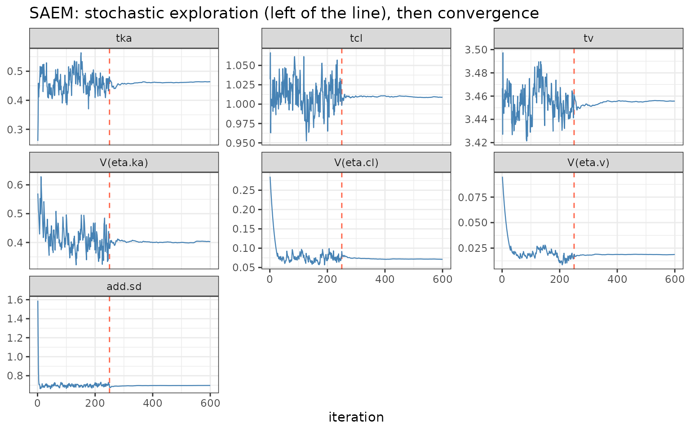

SAEM in nlmixr2: robust stochastic-approximation EM
2026-09-22
Source:vignettes/articles/saem.Rmd
saem.RmdSAEM (est = "saem"): the robust stochastic EM
est = "saem" is nlmixr2’s Stochastic
Approximation Expectation-Maximization method (Kuhn &
Lavielle 2005), and – with focei – one of the two
workhorses. Where the conditional-estimation
ladder approximates the marginal likelihood analytically (a
Laplace-type expansion), SAEM sidesteps that approximation entirely: it
draws the random effects with MCMC and updates the
population parameters by stochastic approximation. That
makes it exceptionally robust – it keeps working on nonlinear models,
mixtures, and awkward posteriors where a Laplace approximation is
unreliable or an optimizer gets stuck.
This article leads with a worked example; the algorithm follows.
Worked example: watch it converge, and check it against FOCEI
The theophylline model, one compartment, between-subject variability
on ka, cl and v:
library(nlmixr2)
theoModel <- function() {
ini({
tka <- 0.45; tcl <- 1; tv <- 3.45
eta.ka ~ 0.6; eta.cl ~ 0.3; eta.v ~ 0.1
add.sd <- 0.7
})
model({
ka <- exp(tka + eta.ka)
cl <- exp(tcl + eta.cl)
v <- exp(tv + eta.v)
d/dt(depot) <- -ka * depot
d/dt(center) <- ka * depot - cl / v * center
cp <- center / v
cp ~ add(add.sd)
})
}saemControl() sets the two phases of the run explicitly:
nBurn exploratory iterations (a constant,
large stochastic step that lets the chain roam), then nEm
convergence iterations (a shrinking Robbins-Monro step
that averages the noise away):
fitSaem := nlmixr2(theoModel, nlmixr2data::theo_sd, est = "saem",
control = saemControl(nBurn = 250L, nEm = 350L, print = 0L))
fitFocei := nlmixr2(theoModel, nlmixr2data::theo_sd, est = "focei",
control = foceiControl(print = 0L))The signature SAEM convergence trajectory
The whole parameter history is stored in the fit. Plotting it shows
SAEM’s two phases unmistakably – noisy exploration up to
nBurn, then a smooth settle:
library(ggplot2)
nBurn <- 250
ph <- fitSaem$parHistData
keep <- c("tka", "tcl", "tv", "V(eta.ka)", "V(eta.cl)", "V(eta.v)", "add.sd")
long <- do.call(rbind, lapply(keep, function(p)
data.frame(iter = ph$iter, parameter = p, value = ph[[p]])))
long$parameter <- factor(long$parameter, levels = keep)
ggplot(long, aes(iter, value)) +
geom_vline(xintercept = nBurn, linetype = 2, colour = "tomato") +
geom_line(linewidth = 0.4, colour = "steelblue") +
facet_wrap(~ parameter, scales = "free_y") +
labs(x = "iteration", y = NULL,
title = "SAEM: stochastic exploration (left of the line), then convergence") +
theme_bw()
Left of the red line the chain explores; right of it the decreasing
step size drives it to the maximum-likelihood estimate. Watching this
plot is the standard way to judge SAEM convergence – if the right-hand
phase has not flattened, increase nEm.
It agrees with FOCEI
On a model where FOCEI’s Laplace approximation is accurate, SAEM lands in the same place – a reassuring cross-check from a completely different estimation principle:
round(rbind(FOCEI = fitFocei$theta, SAEM = fitSaem$theta), 3)
#> tka tcl tv add.sd
#> FOCEI 0.463 1.012 3.460 0.694
#> SAEM 0.464 1.009 3.456 0.697
round(rbind(FOCEI = diag(fitFocei$omega), SAEM = diag(fitSaem$omega)), 3)
#> eta.ka eta.cl eta.v
#> FOCEI 0.400 0.069 0.019
#> SAEM 0.403 0.071 0.019A note on the objective: SAEM’s reported -2LL is
computed by a separate likelihood step (importance
sampling or Gaussian quadrature) with its own constant convention, so it
is not directly comparable to a FOCEI or IMP objective.
Compare SAEM to SAEM.
When to choose SAEM
Reach for saem when:
- the model is strongly nonlinear or the individual
posteriors are non-Gaussian, so a Laplace approximation
(FOCEI/
laplace) may be biased – SAEM makes no such approximation; - you are fitting a mixture model (distinct subpopulations); SAEM’s MCMC E-step handles the discrete mixture indicator naturally (see the mixture-models article);
- an optimizer-based method fails to converge or is sensitive to starting values – SAEM’s stochastic exploration is far less prone to getting stuck;
- you have many random effects or a complex covariance structure, where the robustness of the stochastic E-step pays off.
Prefer FOCEI when the model is close to linear and you want the fastest deterministic fit with an immediately comparable objective function; use the importance-sampling EM family when you specifically need a Monte-Carlo exact marginal likelihood (SAEM does not return one directly).
How SAEM works
SAEM is an EM algorithm whose E-step is done by simulation. Each iteration:
-
Simulation (stochastic E-step). Rather than
integrate the random effects out analytically, SAEM samples them: a
Metropolis-Hastings chain draws each subject’s
etafrom its conditional posteriorp(eta | y_i, theta)at the current parameters. No linearization, no Laplace expansion. -
Stochastic approximation. The complete-data
sufficient statistics are updated as a running average with step size
gamma_k. During burn-in (k <= nBurn)gamma_k = 1, so the statistics track the exploring chain; during convergence (k > nBurn)gamma_kdecreases (Robbins-Monro), averaging out the Monte-Carlo noise so the estimates settle. -
Maximization (M-step). Given the (approximate)
sufficient statistics, the population parameters – typical values,
Omega, residual error – have closed-form updates for mu-referenced models, which is what makes each iteration cheap.
Two practical consequences: the objective is not
produced by the algorithm itself (nlmixr2 computes the -2LL
afterward, by importance sampling or Gaussian quadrature), and the fit
is stochastic – reproducible for a fixed seed, but you
should confirm convergence from the trajectory rather than from a single
objective value.
The same idea, a different implementation: babelmixr2
saemix
babelmixr2 exposes a second SAEM through
est = "saemix", which runs the
saemix R package (Comets, Lavielle &
Kuhn) on the same nlmixr2 model and wraps the result as an nlmixr2 fit.
Because both implement the same algorithm, saemix is a
natural independent cross-check of an est = "saem" run:
library(babelmixr2)
fitSaemix <- nlmixr2(theoModel, nlmixr2data::theo_sd, est = "saemix",
control = saemixControl())How it relates to the other methods
| FOCEI / laplace / agq | SAEM | imp / impmap / qrpem | |
|---|---|---|---|
| Marginal likelihood | Analytic approximation | Not used during fitting (MCMC E-step) | Monte-Carlo (near-exact) |
| E-step | Conditional mode | MCMC sampling | Importance sampling |
| Robustness on hard/multimodal models | Lower | High | Medium |
| Objective for model comparison | Directly | Separate step, own constant | Directly (matches NONMEM IMP) |
| External equivalents | NONMEM FOCE(I); Phoenix FOCE | NONMEM SAEM; Monolix; saemix | NONMEM IMP/IMPMAP; Phoenix QRPEM |
est = "saem" corresponds to the SAEM in NONMEM
(METHOD=SAEM), Monolix (whose engine is SAEM), and the
saemix package – all the same Kuhn-Lavielle algorithm. It
is the robust, approximation-free member of the nlmixr2 estimation
family, complementary to FOCEI’s speed and the importance-sampling
family’s exact likelihood.
References
- Kuhn E, Lavielle M. Maximum likelihood estimation in nonlinear mixed effects models. Computational Statistics & Data Analysis, 2005.
- Delyon B, Lavielle M, Moulines E. Convergence of a stochastic approximation version of the EM algorithm. Annals of Statistics, 1999.
- Comets E, Lavielle M, Kuhn E. saemix: an R version of the SAEM
algorithm. (the
saemixpackage, exposed viababelmixr2).